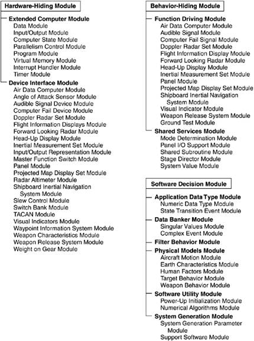

| [ Team LiB ] |
|
3.3 Architecture for the A-7E Avionics SystemThe architecture for the A-7E avionics system is centered around three architectural structures discussed in Chapter 2:
We will discuss each in turn. DECOMPOSITION STRUCTUREUnless a program is small enough to be produced by a single programmer, we must think how the work will be divided into units that can be implemented separately and how those modules will interact. The unit of the decomposition structure is, of course, the module. A module may be thought of as defining a group of procedures, some public and some private, plus a set of private data structures. The relation among modules in the decomposition structure is "is-a-submodule-of" or "shares-a-secret-with." Prior to 1977, performance was the overriding goal of embedded (as well as most other) systems. The goal of the A-7E designers was to balance performance with modifiability and demonstrate that it was possible to achieve modifiability without compromising performance. Information HidingThe A-7E module decomposition is based on information hiding. An architectural tactic we will revisit in Chapter 5, information hiding works by encapsulating system details that are likely to change independently in different modules. The interface of a module reveals only those aspects considered unlikely to change; the details hidden by the module interface are the module's secrets. For instance, if a device such as an aircraft altitude sensor is likely to be replaced over the life of an avionics program, the information-hiding principle makes the details of interacting with that device the secret of one module. The interface to the module provides an abstraction of the sensor, consisting perhaps of a single program that returns the most recent value measured by the sensor, because all replacement sensors probably share this capability. If the sensor is ever replaced, only the internal parts of that module need to change; the rest of the software is unaffected. Information hiding is enforced by requiring that modules interact only via a defined set of public facilities—their interfaces. Each module provides a set of access procedures, which may be called by any other module in the system. The access procedures provide the only inter-module means for interacting with information encapsulated in a module. Of course, this is the philosophy underlying object-based design, with a key difference: Whereas objects are created from the physical objects inherent in the application, or conjured up from intuitive insights about the system, information-hiding modules are derived by cataloging the changes to the software that are perceived to be likely over the system's lifetime. A module may consist of submodules, or it may be considered a single implementation unit. If it contains submodules, a guide to its substructure is provided. The decomposition into submodules and their design is continued until each module is small enough to be discarded and begun again if the programmer assigned to it leaves the project. Specific goals of module decomposition are as follows:
The documentation of the decomposition structure is sometimes called a module guide. It defines the responsibilities of each of the modules by stating the design decisions that will be encapsulated by it. Its purpose is to avoid duplication and gaps, to achieve separation of concerns, and, most of all, to help a maintainer find out which modules are affected by a problem report or change request. The guide states the criteria used to assign a particular responsibility to a module and arranges the modules in such a way that we can find the necessary information without searching through unrelated documentation. It reflects the tree structure of the decomposition structure, dividing the system into a small number of modules and treating each one in the same way until all of them are quite small. Each nonleaf node in the tree represents a module composed of the modules represented by its descendants. The guide does not describe any runtime relationship among the modules: It doesn't talk about how modules interact with each other while the system is executing; rather, it simply describes a design-time relationship among the implementation units that constitute the design phase of a project. Applying this principle is not always easy. It is an attempt to lower the expected cost of software by anticipating likely changes. Such estimates are necessarily based on experience, knowledge of the application area, and an understanding of hardware and software technology. Because a designer might not have had all of the relevant experience, formal evaluation procedures were used that were designed to take advantage of the experience of others. Table 3.2 summarizes the role of the module structure in the A-7E architecture.
A-7E Module Decomposition StructureTo describe the A-7E module decomposition structure, and to give an example of how a module structure is documented, we provide the following excerpts from the A-7E software module guide. The decomposition tree is described beginning with the three highest-level modules. These are motivated by the observation that, in systems like the A-7E, changes tend to come from three areas: the hardware with which the software must interact, the required externally visible behavior of the system, and a decision solely under the jurisdiction of a project's software designer.
The module guide goes on to explain how conflicts among these categories (e.g., is a required algorithm part of the behavior or a software decision?) are arbitrated by a complete and unambiguous requirements specification and then provides the second-level decomposition. The following sections describe how the Software Decision Module is decomposed.
The module guide describes a third- (and in some cases a fourth-) level decomposition, but that has been omitted here. Figure 3.4 shows the decomposition structure of the A-7E architecture down to the third level. Notice that many of the Device Interface modules have the same names as Function Driver modules. The difference is that the Device Interface modules are programmed with knowledge of how the software interfaces with the devices; the Function Driver modules are programmed with the knowledge of values required to be computed and sent to those devices. This suggests another architectural relationship that we will explore shortly: how the software in these modules cooperates to accomplish work. Figure 3.4. The module decomposition view of the A-7E software architecture But the module decomposition view is not yet complete. Recall from Chapter 2 our definition of architecture as including the behavioral specification for each of the elements. Carefully designed language-independent interfaces are crucial for maintaining portability and achieving interoperability. Here, each module must have an interface specified for it. Chapter 9 discusses documentation for software interfaces. In the previous chapter, we remarked that architectures serve as the blueprint for the developing project as well as for the software. In the case of the A-7E architecture, this second-level module decomposition structure became enshrined in many ways: Design documentation, online configuration-controlled files, test plans, programming teams, review procedures, and project schedule and milestones all used it as their unit of reference. USES STRUCTUREThe second major structure of interest in the A-7E architecture is the uses structure. The decomposition structure carries no information about runtime execution of the software; you might make an educated guess as to how two procedures in different modules interact at runtime, but this information is not in fact in the module decomposition. Rather, the uses structure supplies the authoritative picture of how the software interacts. The Uses RelationThe concept behind the uses structure is the uses relation. Procedure A is said to use procedure B if a correctly functioning procedure B must be present in order for procedure A to meet its requirements. In practice this relation is similar to but not quite the same as the calls relation. Procedure A usually calls procedure B because it uses it. However, here are two cases where uses and calls are different:
The uses relation allows rapid identification of functional subsets. If you know that procedure A needs to be in the subset, you also know that every procedure that A uses must also be there. The transitive closure of this relation defines the subset. It therefore pays to engineer this structure, to impose a discipline on it, so that every subset needn't consist of the entire system. This means specifying an allowed-to-use structure for programmers. After implementation is complete, the actual uses can be cataloged. The unit of the uses (or allowed-to-use) structure is the access procedure. By dictating what procedures are allowed to use which other procedures (and, by implication, what procedures are not allowed to be used by which other procedures), the uses structure is defined. Although the unit of the uses structure is a procedure, in practice all of the procedures of a module may share usage restrictions. Hence, the name of a module might appear in the uses structure; if so, it is shorthand for all of the access procedures in that module. The uses (allowed-to-use) structure is conceptually documented with a binary matrix; each row and column lists every procedure in the system. Thus, if element (m,n) is true, then procedure m uses (is allowed to use) procedure n. In practice, this is too cumbersome, and a shorthand was introduced in which rules for whole modules (as opposed to individual procedures within each module) were adopted. Table 3.3 summarizes the role of the uses structure in the A-7E software architecture.
The A-7E Uses StructureRecall that the uses structure is first documented in a specification showing the allowed-to-use relation; actual uses are extracted after implementation. The allowed-to-use specification for the A-7E architecture is a seven-page table of which Table 3.4 is a short excerpt. The two-character preface refers to the second-level modules. The names to the right of the period refer to submodule names that we have mostly omitted from this chapter.
Notice the pattern that emerges:
What we have is a picture of a system partitioned into layers. The Extended Computer Module is the bottommost layer, and the Application Data Type Module is built right on top of it. The two form a virtual machine in which a procedure at a particular level is allowed to use a procedure at the same or any lower level. At the high end of the layering come the Function Driver and Shared Services modules, which have the freedom to use a wide variety of system facilities to do their jobs. In the middle layers lie the Physical Models, Filter Behavior, and Data Banker modules. The Software Utilities reside in parallel with this structure and are allowed to use anything (except the Function Drivers) necessary to accomplish their individual tasks. Layered architectures are a well-known architectural pattern and occur in many of the case studies in this book. Layering emerges from the uses structure, but is not a substitute for it as layering does not show what subsets are possible. This is the point of the uses structure—a particular Function Driver Module will use a particular set of Shared Services, Data Banker, Physical Models, Device Interface, Application Data Type, and Extended Computer operations. The used Shared Services in turn use their own set of lower-level procedures, and so forth. The complete set of procedures derived in this manner constitutes a subset. The allowed-to-use structure also provides an image of how the procedures of modules interact at runtime to accomplish tasks. Each Function Driver procedure controls the output value associated with one output device, such as the position of a displayed symbol. In general, a Function Driver procedure retrieves data (via Data Banker procedures) from data producers, applies rules for computing the correct value of its assigned output, and sends that value to the device by calling the appropriate Device Interface procedure. Data may come from one of the following:
Once the allowed-to-use structure is designed, implementors know what interfaces they need to be familiar with in order to do their work. After implementation is complete, the actual uses structure can be documented so that subsets can be fielded. The ability to deploy a subset of a system is an important part of the Evolutionary Delivery Life Cycle (see Chapter 7, Designing the Architecture). When budgets are cut (or overrun) and schedules slip, delivering a subset is often the best way to put a positive face on a bad situation. It is probably the case that more subsets would be delivered (instead of nothing at all) if the architectural structure necessary to achieve them—the uses structure—had been carefully designed. PROCESS STRUCTUREThe third structure of architectural importance to the A-7E is the process structure. Even though the underlying aircraft computer is a uniprocessor, the Extended Computer Module presents a virtual programming interface that features multiprocessing capabilities. This was to plan for if and when the A-7E computer was replaced with an actual multi-processor. Hence, the software was implemented as a set of cooperating sequential processes that synchronize with each other to cooperatively use shared resources. The set was arranged using offline (pre-runtime) scheduling to produce a single executable thread that is then loaded onto the host computer. A process is a set of programming steps that are repeated in response to a triggering event or to a timing constraint. It has its own thread of control, and it can suspend itself by waiting for an event (usually by invoking one of the event-signaling programs on a module's interface). Processes are written for two purposes in the A-7E. The first is for the function drivers to compute the output values of the avionics software. They are required to run periodically (e.g., to continuously update a symbol position on the heads-up display) or in response to some triggering event (e.g., when the pilot presses the weapon release button). It is natural to implement these as processes. Conceptually, function driver processes are structured as follows:
Processes also occur, although less frequently, as a way to implement certain access procedures. If the value returned by an access procedure is expensive to compute, a programmer might meet the timing requirements by continuously computing the value in the background and simply returning the most recent value immediately when the access procedure is called. For example,
The process structure, then, consists of the set of processes in the software. The relation it contains is "synchronizes-with," which is based on events that one process signals and one or more processes await. This relation is used as the primary input to the scheduling activity, which includes deadlock avoidance. The offline scheduling techniques used in the A-7E software are beyond the scope of this treatment, but they avoid the overhead of a runtime scheduler, and they would not have been possible without the information contained in the process structure. The process structure also allows an optimization trick: merging two otherwise unrelated processes, which makes scheduling easier in many circumstances and avoids the overhead of context switching when one process suspends and another resumes. This technique is invisible to programmers, occurring automatically during system construction. Table 3.5 summarizes the role of the process structure in the A-7E architecture.
The process structure emerged after the other structures had been designed. Function Driver procedures were implemented as processes. Other processes computed time-consuming calculations in the background so that a value would always be available. Two kinds of information were captured in the process structure. The first documented what procedures were included in the body of each process. This gave a picture of the threads that ran through the system and also told the implementors which procedures must be coded to be re-entrant (i.e., able to carry two or more threads of control simultaneously) by using protected data stores or mutual exclusion. It also gave designers early insight into which procedures were going to be invoked most often, suggesting areas where optimization would pay off. The second kind of information in the process structure documented which processes (or sequential segments of process threads) could not execute simultaneously. The actual regions of mutual exclusion were not finalized until the processes were completely coded, but the early "excludes" relation among processes let the scheduling team understand some of the quantitative requirements of the offline scheduler and start planning on areas where automation would be most helpful.
|
| [ Team LiB ] |
|